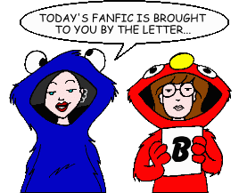
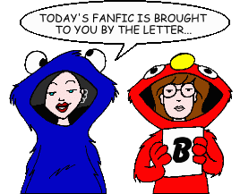

Fan Fiction
"B" by Title

Fan Fiction
"B" by Title

|
Authors: If you no longer wish for any of your stories to be posted, please send e-mail to fanfic@lawndale.net and I will remove them at once. |
| Baby Lane [Artwork] By M. Bruner Category: Romance Witness the ups and downs and comings and goings of the lives of Daria, Jane, Trent, and Tom over the years. |
| Babylon By Sam Lincoln Category: Past & Future Ten years after high school, what happens when two old friends meet? Note: This story includes content (language, violence, or sexual situations) that may not be appropriate for some readers. |
| Back in Fifteen Minutes By Brother Grimace Category: Miscellaneous Daria is one of the world's greatest superheroes--but when she's taking a special shower, woe betide the idiots of Lawndale! |
| Back to the Future, Again! [Artwork] By Milo Minderbinder Category: Series & Multi-Part Stories (Crossovers & Parodies) A parody of the "Back to the Future" trilogy, with Daria and Aunt Amy filling in for Marty McFly and Doc Brown. As in the movies, a not-so-simple trip to the past becomes a frantic journey across the space/time continuum to repair the fabric of history, with much hilarity and plenty of hijinks along the way. |
| Backhanded Remarks (*) By The Angst Guy Category: Miscellaneous Sandi Griffin courts disaster at the French Open tennis tournament, and nets a ton of trouble. |
| Bad Day By Adrienne Category: Past & Future Daria's been having a lot of bad days lately... and Tom just doesn't understand. |
| Bad Movie Night By Essenare Category: Miscellaneous Find out why Daria does not like the movie "Annie." |
| Bait and Switch By Medea42 Category: Miscellaneous Ms. Li forces Daria and Kevin to act like they're a couple at an important social gathering. In return, Brittany demands that she date Tom for the night as collateral. Can you see the wheels of revenge turning yet? |
| Bake Off (*) By Queen Jossie Category: Miscellaneous A short story inspired by the lack of baking skills of the author's sister. |
| Balance of Power By Jill Palmer Category: Miscellaneous Quinn meets top-of-the-pecking-order pressure. Crystal meets Trent and Jesse. Jane gets hurt. You, the reader, meet a different Crystal than Daria & Company know. Confused? Read on! |
| The Ballad of Stacy Rowe (*) By The Angst Guy Category: Crossovers & Parodies A musical spin-off from a much better fanfic by E. A. Smith ("Good Intentions"), this bluegrass-music ballad works best if sung to the tune of Grandpa Jones's famous "Mountain Dew," with banjo accompaniment. |
| Balletdictorian By Kristen Bealer Category: Past & Future Six-year-old Jodie Landon dreams of being the perfect ballerina, but life takes a few interesting turns along the way as she struggles to win her parents' support and attention. |
| Band Aid By Admonisher Category: School Situations When Daria and Jane join band (to get out of Ms. Morris' hated gym class), they expected a break from corruption. Boy, were they wrong. With Quinn and Co. involved, the school in chaos, and a rich grant up for grabs, Daria finds herself wrapped up in a showdown between politics and greed. |
| The Band, The Sleeze, and the Flygirls By Moogus Category: School Situations When Trent's band is in trouble, Jane and Daria offer to be flygirls, and Upchuck plays in the actual band. |
| The Bands of Summer By Gregor Samsa Category: Miscellaneous An epic tale of friendship, deceit, and financial impoverishment. Oh, and some music, too. |
| Barely Tales By Kemical Reaxion Category: Series & Multi-Part Stories (Crossovers & Parodies) Fairy tales. We've all heard them... but not like this! |
| Battle of the Bands By Kelly Category: Romance Mystik Spiral had entered a Battle of the Rock Bands, but the thing is they must have a girl in the band or they will get disqualified. So they ask Daria, but when the Battle finally comes up, so does Monique. Can Daria deal with Monique getting up on her man? |
| Battle Royale: Beyond Blunderdome By Canadibrit Category: Crossovers & Parodies Based on the film "Battle Royale" by Fukasaku Kinji. A school trip turns nightmarish as the Daria cast is forced to participate in a Government-inspired 'game'. The rules: Kill each other off until only one remains... |
| Beach Bum-mer By Pat Leland Category: Miscellaneous The Morgendorffers head for the beach, with Sandi and some unwanted guests in tow. |
| The Beaches of Barksdale [Artwork] By Galen Hardesty Category: Miscellaneous Helen declares a family bonding day at the beach, wrecking Daria's long-planned museum trip with Jane. Consequently, Daria pulls out (almost) all the stops to make sure it doesn't happen again. |
| The Bear and the Unicorn By Brother Grimace Category: Holidays A Valentine's Day-themed Iron Chef featuring Jake and Helen. |
| Bearcat Hollow (*) By Guy Payne Category: Miscellaneous A field trip gone wrong, with two students missing. Can Daria and Sandi survive the elements and each other? Find out what happens deep in Bearcat Hollow. |
| Beavis & Butt-head... NOT! By Ronin Category: Miscellaneous Daria and Quinn imitating Beavis and Butt-head? The world *has* come to an end... |
| Beavis, Daria, and Butt-Head By Patrick Moore Category: Crossovers & Parodies Set in the past and the present, Daria tells about the time Beavis and Butt-Head came to her fifteenth birthday party. Plus, we find out from where Daria got her green jacket and black skirt. |
| Before the Deprogramming By Kristen Bealer Category: Past & Future Thirteen-year-old Jane Lane joins the Girl Scouts in an attempt to get out of baby-sitting. She finds it tougher than she expected as she struggles to survive a ruthless cookie sale competition, two hyperactive children, and ten thousand verses of "John Jacob Jingleheimer Schmidt." |
| Behind Enemy Lines By Brother Grimace Category: Sci-Fi, Fantasy & Horror An unauthorized one-shot based on "Estrangsters," this fic finds a familiar character from "Its All About Respect" in the greatest challenge of his life... Note: This story includes content (language, violence, or sexual situations) that may not be appropriate for some readers. |
| Behind the Glasses [Artwork] By John Berry Category: Miscellaneous An exclusive behind-the-scenes look at the making of "Daria" fan fiction. Narrated by Jane's new beau, Tom, this exclusive production includes interviews with the cast and fanfic authors, and rare footage of "bloopers," outtakes, and never-before-seen stories. |
| Behind the Glasses 2001 By Warpedkjh13 Category: Miscellaneous The fourth entry in the "Behind the Glasses" series, featuring even more fan fiction "bloopers and outtakes." |
| Behind the Glasses II By Canadibrit Category: Miscellaneous A follow-up to John Berry's "Behind the Glasses," featuring more "bloopers and outtakes" from various fan fiction stories. |
| Behind the Glasses III By Canadibrit Category: Miscellaneous The third entry in the "Behind the Glasses" series, featuring even more fan fiction "bloopers and outtakes." |
| Beneath the Blue Suburban Skies By Jill Friedman Category: Miscellaneous What caused Penny Lane to leave Lawndale and wander the jungles and villages of Central America? Here's one possible answer, as Penny returns to Casa Lane haunted by memories of her past. |
| Beneath the Copper Sun (*) By Guy Payne Category: Romance Daria unexpectedly encounters an old aquaintance in the damndest place. From a PPMB Iron Chef. |
| Best Years of Our Lives, Revisited [Artwork] By John Berry Category: School Situations Trent re-enrolls in high school after discovering he never officially graduated. |
| Better Times Than These By Jen Category: Past & Future As children, Daria and Quinn battle sharing a room, babysitters, parents, and a clown?! As new Lawndale citizens, Jane and Trent deal with leaving their childhood home and encounter a few other familiar characters. |
| Between the Boards By Di Category: Miscellaneous Response to the PPMB Write-Off Challenge: What if Quinn was a jock? |
| The Big Wedding By Brother Grimace Category: Miscellaneous Written by "Lyman Moneychanger" (hey, who's he?), Daria and Trent's big day is here... or is it? |
| Blast from the Past By Nemo Blank Category: Miscellaneous After a gun is found in her school locker, Daria endures both physical and mental torture at a psychiatric facility in an effort to "cure" her. It's a race against time for her family and friends to prove her innocence before the Daria they know is lost forever. Note: This story includes content (language, violence, or sexual situations) that may not be appropriate for some readers. |
| Blind Date By Ana Sturtz Category: Miscellaneous Daria goes on a blind date with a friend of Jane's. |
| Blind Spot By Brother Grimace Category: Miscellaneous Ms. Li receives a letter from one of her most intelligent students--although she never would have guessed that. |
| Blood and Irony By J Osako Category: Sci-Fi, Fantasy & Horror Daria and Jane have developed psychic abilities and they have reason to believe that the death of one of the school's coaches may have had a supernatural cause. |
| Blood Oath of Patriots By Galen Hardesty Category: Miscellaneous Daria achieves greater understanding of Mr. O'Neill, who asks her to write another Melody Powers story to jump-start the coffehouse. Inspired by Kevin, Daria writes a crossover story... (Set after the events of "Cafe Disaffecto.") |
| Blood Oath of Patriots, Part II: By Any Other Name By Galen Hardesty Category: Miscellaneous Daria torments Kevin. Jane torments Daria. Daria and Jane torment Mr. O'Neill. Kevin torments most of the faculty. Quinn develops literary taste. Melody struggles back from Death's door as Daria slips closer to the shadowy underworld of darkest Lawndale. Mind games and game fixing abound in part II of this epic miniseries. |
| Blood on the Asphalt By Galen Hardesty Category: Past & Future Be very, very careful when crossing Iroquois Street. A Tale of Young Daria. |
| Blood, Sweat and Cheers By Kristen Bealer Category: Alternate History Chaos erupts when Jane Lane does the unthinkable: she joins the cheerleading squad. An alternate universe story that branches off from "The F Word." |
| Bloodshot [Artwork] By Devarie Hunter Category: Miscellaneous Daria takes a blood type test in Ms. Barch's class, and is shocked at what she discovers. |
| The Blue and Yellow Submarine (*) By Guy Payne Category: Crossovers & Parodies Many leagues beneath the Sea of Blue and Yellow, the magical land of Lawndaleland is being menaced by an internal faction dedicated to crushing it's sartorial freedom beneath the iron heel of fashion. Who can Capt. Daria find to help save her home town? Can they survive the many pointless and annoying adventures that beset them? And, most importantly, can she use the towns fuel card to get a cash advance? |
| The Blues Others [Artwork] By Mike Yamiolkoski Category: Crossovers & Parodies "It's 106 miles to Lawndale. We got a full tank of gas, half a pepperoni pizza, it's dark, and I'm wearing thick, round glasses." "Hit it." |
| Bond, Jake's Bond By John Berry Category: Miscellaneous Jake finds, to his dismay, that he really doesn't know his girls at all, so he decides to take Daria and Quinn on a road trip in an attempt to bond with them. Naturally, things don't turn out quite the way he expected. |
| Boomerang By Wouter Jaegers Category: Past & Future In the not-so-distant future, Jane has an encounter that showcases a time-honored lesson: "What goes around, comes around." |
| Boredom is Freedom By Mariah W. Category: Miscellaneous Daria's boredom has crazed her enough to go take a walk with Jane. When she realizes all the crazy stuff that's happened, she wishes she never even took a step out of her house! |
| Boston Blues 1: Graveyard Shift (*) By Guy Payne Category: Miscellaneous Jane finds a job to pay for BFAC. An Iron Chef from PPMB, with a slice from my sick, sad life. |
| Boston Blues 2: Wired (*) By Guy Payne Category: Miscellaneous Freshman Daria experiences her first long dark all-nighter of the soul. From a PPMB Iron Chef. |
| Bouncing 'Round the Room By Sam Lincoln Category: Miscellaneous Yet another new student shows up in Lawndale. How will this alter the slippery dynamics present at everyone's favorite fictitious high school? Inquiring minds want to know. |
| Bound to Highland By Richard Lobinske Category: Alternate History An alternate history chronicling Daria's struggles after Jake and Helen divorce while still in Highland and the family never moves away from the town. Based on a version of Daria first introduced in the story "Three." |
| A Bouquet for the Brain (*) By Milo Minderbinder Category: Crossovers & Parodies Take a glimpse into the mind of Kevin, a boy living in an "intellectual twilight" who is transformed into a genius by means of an operation. A journey between the distant worlds of ignorance and intelligence, innocence and knowledge, told from Kevin's point of view. Based on the novel "Flowers for Algernon." |
| Bouquet Too By Austin Covello Category: Miscellaneous Trent's getting hitched to a Morgendorffer gal. |
| Box to the Future By Smileyfax Category: Sci-Fi, Fantasy & Horror Daria discovers that the refrigerator box she's been obsessing over is actually a portal to her past -- and works with her adolescent self to improve her life. Winner of the category "Favorite Supernatural or Fantasy Non-Horror" in the 5th Daria Fanworks Awards. |
| Boxing Daria 2 By Robert Nowall Category: Miscellaneous A play in one act, and perhaps a more appropriate--and literal--use of the title. |
| Boxing Daria: Alternate Ending By Cruel Summer Nights Category: Alternate History What if Daria wasn't so lucky in "Boxing Daria"? |
| Boy Fiend [Artwork] By Austin Covello Category: Romance Daria finally gets a steady boyfriend. Find out who it is. One thing's for sure, though: it isn't Trent! |
| The Boy with Sea Green Eyes (*) By The Angst Guy Category: Alternate History Of all the "what ifs" of "Daria," the most intriguing pivot around Tom Sloane's appearance in the series. What if neither Jane nor Daria had hooked up with him? Here is one possible outcome. |
| The Brain & The Beauty By Ronin Category: Romance A kiss turns Daria's world upside down. Who kissed her? It ain't Tom or Trent. (PG-13 version of original NC-17 story) |
| The Brain and the Beauty Redux By Disco 3:16 Category: Romance In this remake of Ronin's "The Brain and the Beauty," an outcast and a popular girl find their worlds colliding after an innocent bet changes their lives forever. |
| Brain Games By Thomas Mikkelsen Category: Miscellaneous When Jane thinks she might be pregnant, it blows up in Quinn's face. |
| Brainstorming Session By NomadX Category: Miscellaneous A public service announcement. |
| Brainwashed By Wouter Jaegers Category: Miscellaneous Daria gets a makeover and performs a makeover herself. |
| Brassed Off By The Unknown Category: School Situations It's "Music in Our Schools Month," and various students are forced to take a music course for the big concert. |
| Brave New World (*) By The Angst Guy Category: Past & Future The only thing worse than waking up without remembering where you are, who you are with, or how you got there... is remembering. A PPMB Iron Chef short story. |
| Breakin' Up The Band By Mitch Category: Past & Future Trent leaves Mystik Spirial for something more important to him. |
| Breaking Point (*) By NomadX Category: Miscellaneous Sometimes a person just can't take it anymore. |
| Breaking Strain By Mystik Slacker Category: Miscellaneous Daria has too many extracurricular activities. Stacy has too much homework. Sandi has too much competition. Someone's going to break under the strain. |
| Brief Candle (*) By Guy Payne Category: Miscellaneous "All the world's a stage, the men and women merely actors..." From a PPMB Iron Chef. |
| Bringing the Angst By Roland "Jim" Lowery Category: Sci-Fi, Fantasy & Horror Heartache, unhappiness, anger, destruction, pain, and ruin... |
| Bringing the Cheer By Roland "Jim" Lowery Category: Miscellaneous Love, happiness, joy, creation, comfort, and prosperity... |
| Brittany's Fear [Artwork] By Mitch Category: Miscellaneous Brittany has a nightmare about Daria becoming a cheerleader. |
| Brittany's Jacuzzi By Mitch Category: Miscellaneous Brittany has a dream where she gets a Jacuzzi and everyone she knows enters her bathroom. |
| Broken Girl By LilMeg Category: Miscellaneous Daria and Jane meet a new girl at school named Megan. When she writes a song for Trent, he ends up with a little more than just a song. |
| Broken Hearted Regrets By Robin Sena Category: Past & Future Kevin is dead, and Brittany blames herself. |
| A Broken Night By Angelinhel Category: Alternate History An AU story set during "Is It Fall Yet?" in response to Ned's Iron Chef Challenge to write a Daria/DeMartino shipper. Probably not what you're expecting... |
| Bromwell Bound: That One Fateful Summer By Matthew McGeehin Category: Past & Future After graduated from Fielding, and being unceremoniously dumped by Daria Morgendorffer, Tom Sloane attempts to move on with his life with his last summer in Lawndale, as well as finally make peace with his family, before departing to Bromwell University. But heartache is not easy to overcome, and harder so when certain words cause him to doubt everything he's ever believed in. |
| Brother, When You're Found By BlackWolfhound Category: Past & Future After the events of IICY, Jane and Daria only have to survive the school dance before they can finally say "good riddance" to Lawndale High. However, both Jane and Jake are suddenly confronted with an unexpected family addition, which makes the dance petty in comparison, especially because Jake's new-found brother has already played a part in Daria's life before... |
| Brownstone, Green Eyed [Artwork] By Acrobat Category: Past & Future After Daria barely survives her first semester in a college dorm, she and Jane move into one floor of a house where the members of Mystik Spiral have already taken up residence. |
| Brush Strokes: The Adventures of Jane Lane By Erin Mills Category: Series & Multi-Part Stories (Past & Future) It's an overseas adventure when Jane Lane, artiste extraordinare, starts attending London's prestigious Von Knippling Academy of Art. (Note that these stories were written before "Is It College Yet?", which explains why Jane isn't attending Boston Fine Arts College.) |
| Bump, the System Lord By Brother Grimace Category: Crossovers & Parodies A couple of quick scenes with my favorite "Falling Into College" character, now with the station in life she's always believed to be hers... |
| Bus Stop (*) By The Angst Guy Category: Crossovers & Parodies A crossover ficlet with an ironic "uh-oh." An entry in one of the PPMB's "Iron Chef" contests. |
| Busted Stuff By Sam Lincoln Category: Miscellaneous What happens when one amp breaks? Plenty. |
| But In Her Heart a Cold December (*) By The Angst Guy Category: Miscellaneous "Might be CIA," wrote Daria of her security-obsessed high-school principal, Angela Li. She was closer to the truth than she knew. Ms. Li reviews her turbulent life through the Cold War, to the time she took over "Laaawndale High," as she recovers from her breakdown in the fifth-season episode, "Fizz Ed." |
| But Is He a Fruit or a Vegetable? By Smileyfax Category: Miscellaneous Tom has an unusual birth defect, and Daria puts her foot in her mouth. |
| But What About the Baby (Sitter)?! By Kristen Bealer Category: Miscellaneous During her first summer in Lawndale, Daria has to deal with two challenges at once: her crush on Trent, and baby-sitting. Will she get over her shyness? Will she learn to change a diaper? Will she survive the experience? |
| The Butterfly Storm By Mystik Slacker Category: Alternate History What if Daria and Jane had met fifteen years earlier? What if Jane had been adopted? What if Quinn wasn't embarrassed by her own intelligence? What if Daria was more outgoing? Find out what Lawndale High would be like in this tale of an alternate universe. |
| By the Memorial By CAP Category: Alternate History In this AU tale, Helen reminisces about her choice to join the Army (rather than go to college) on a visit to the Vietnam Memorial in Washington, DC. Written in response to a PPMB Iron Chef challenge. |